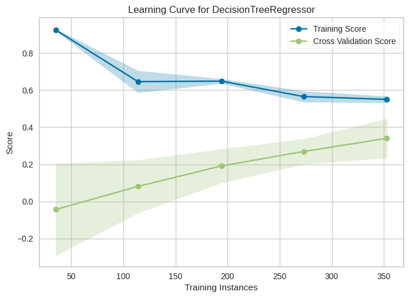
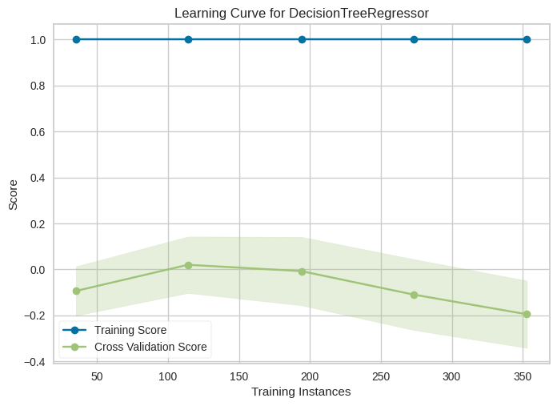

Cross-validation et courbe d’apprentissage#
Le problème : comment régler les hyperparamètres « honnêtement » ?#
Quand on veut améliorer un modèle en jouant sur ses hyperparamètres (max_depth, min_samples_leaf, C d’une SVM, learning_rate d’un boosting…), il faut bien pouvoir comparer plusieurs choix et garder le meilleur. Mais sur quelles données comparer ?
❌ Pas sur le jeu d’apprentissage : un modèle plus complexe aura toujours un meilleur score train (il suffit de le laisser overfitter). Ça ne dit rien sur sa qualité réelle.
❌ Pas sur le jeu de test : le test représente les « données inconnues », celles qu’on n’a pas vues. Si on utilise le test pour choisir nos hyperparamètres, on est en train de s’adapter au test, et on perd son rôle de juge impartial. Un modèle qu’on a tuné sur le test ne dira plus rien d’honnête sur sa généralisation.
Analogie : le jeu de test, c’est l’examen final. Si tu le regardes avant l’examen pour t’entraîner dessus, ton 20/20 ne veut plus rien dire — tu as triché. Le jeu de test doit rester scellé jusqu’à la toute fin.
La solution : un 3e jeu, dit de validation#
On sépare donc les données en trois paquets :
Train : sert à entraîner le modèle.
Validation : sert à comparer différents choix d’hyperparamètres et choisir le meilleur.
Test : sert une seule fois, à la toute fin, pour estimer la performance réelle du modèle choisi.
C’est ce qu’on met en place dans ce notebook, puis on verra que la cross-validation permet de faire cette même chose de manière plus efficace et plus fiable.
import numpy as np
import matplotlib.pyplot as plt
from sklearn.datasets import load_diabetes
from sklearn.tree import DecisionTreeRegressor
from sklearn.model_selection import train_test_split
from sklearn.metrics import r2_score
diabetes = load_diabetes()
X = diabetes.data
y = diabetes.target
X.shape
(442, 10)
Jeu de test#
On met de côté 25% des données (le test set) — et on y touche plus avant la toute fin. Ce paquet représente les « données jamais vues » et ne sert qu’à la mesure finale, une seule fois, pour un verdict honnête.
X_train_full, X_test, y_train_full, y_test = train_test_split(
X, y, test_size=0.25, random_state=2
)
Jeux d’apprentissage et de validation#
Sur les 75% restants (le « train_full »), on extrait encore 33% (soit ≈ 25% du total) comme jeu de validation. Il servira à comparer plusieurs configurations d’hyperparamètres et à choisir la meilleure sans jamais toucher au test.
Récap de la répartition :
50% → train (apprentissage)
25% → validation (choix des hyperparamètres)
25% → test (verdict final)
X_train, X_val, y_train, y_val = train_test_split(
X_train_full, y_train_full, test_size=0.33, random_state=2
)
Expérimentation#
On entraîne un premier modèle avec une configuration donnée d’hyperparamètres, puis on mesure ses performances sur le jeu de validation pour savoir si cette configuration est bonne. En pratique, on répéterait cette étape pour plusieurs configurations et on garderait celle qui a le meilleur score de validation.
tree_reg = DecisionTreeRegressor(max_depth=4, max_features=5, random_state=2)
tree_reg.fit(X_train, y_train)
DecisionTreeRegressor(max_depth=4, max_features=5, random_state=2)In a Jupyter environment, please rerun this cell to show the HTML representation or trust the notebook.
On GitHub, the HTML representation is unable to render, please try loading this page with nbviewer.org.
DecisionTreeRegressor(max_depth=4, max_features=5, random_state=2)
Évaluation du modèle#
On compare le score train et le score validation. L’écart entre les deux est notre baromètre d’overfitting.
y_pred = tree_reg.predict(X_train)
r2_score(y_train, y_pred)
0.6337729052225081
y_pred = tree_reg.predict(X_val)
r2_score(y_val, y_pred)
0.21319468333614966
DecisionTreeRegressor(autres-hyperparamètres)#
Ici, en pratique, on essaierait plusieurs configurations : max_depth=2, max_depth=6, min_samples_leaf=5… et on garderait celle qui donne le meilleur score de validation.
Autre algorithme#
On ferait la même chose avec un autre algo (Random Forest, Gradient Boosting, Ridge…) pour comparer. L’idée est que le jeu de validation sert de juge pour tous les candidats — train pour apprendre, validation pour comparer, test pour le verdict final.
Test des modèles — le verdict final#
Une fois les hyperparamètres optimisés sur la validation, on peut enfin regarder le test. Un seul chiffre, une seule fois : c’est l”estimation honnête de ce que donnera le modèle en production.
⚠️ Attention : si le test donne un résultat décevant, la tentation est de retourner ajuster les hyperparamètres… mais en faisant ça, le test perd son statut de juge impartial (on a triché). La rigueur veut qu’on accepte le verdict ou qu’on reparte de plus loin (nouveau problème, plus de données, nouvelles features…).
y_pred = tree_reg.predict(X_test)
r2_score(y_test, y_pred)
-0.045219289320064915
Limites de cette approche#
Deux problèmes majeurs :
On gaspille des données pour la validation. Ici, 25% du jeu ne sert ni à l’apprentissage ni au test final. Sur un petit dataset comme
diabetes(442 points), ça fait mal : on prive le modèle d’un quart de ses données d’entraînement.Le score de validation est instable. Il dépend du hasard du split — on a eu de la chance ou pas, selon les patients qui sont tombés dans la validation. Changez
random_stateet le score peut bouger significativement. Un seul chiffre peu fiable sur lequel on prend des décisions d’architecture, c’est risqué.
La cross-validation résout ces deux problèmes d’un coup.
Cross-validation#
L’idée : au lieu de choisir un seul découpage train/validation au hasard, on en fait plusieurs, et on fait la moyenne des scores de validation obtenus. On gagne en fiabilité (moyenne sur plusieurs essais au lieu d’un tirage chanceux) et en efficience (chaque donnée sert tour à tour à l’entraînement ET à la validation).
Le principe du k-fold#
On découpe le jeu d’entraînement en \(k\) morceaux (folds) de taille égale. Puis on répète \(k\) fois l’expérience :
Itération 1 : on entraîne sur les folds 2, 3, 4, 5 et on valide sur le fold 1.
Itération 2 : on entraîne sur les folds 1, 3, 4, 5 et on valide sur le fold 2.
Itération 3 : on entraîne sur les folds 1, 2, 4, 5 et on valide sur le fold 3.
… et ainsi de suite.
À la fin, on a \(k\) scores de validation. On les résume par :
leur moyenne → le score attendu du modèle ;
leur écart-type → la stabilité du modèle (un fort écart-type est un signal d’alarme : le modèle est sensible aux données sur lesquelles il est entraîné).
Le bénéfice : chaque donnée sert une fois à la validation et \(k-1\) fois à l’entraînement. On utilise toutes les données pour apprendre et pour valider.

Voir la documentation scikit-learn.
Mise en œuvre dans scikit-learn#
cross_val_score fait tout le travail pour nous : on lui passe un modèle non-entraîné, les données, une métrique et un nombre de folds \(k\), et il renvoie les \(k\) scores de validation.
Jeu d’apprentissage et de test#
Le test set reste indispensable — même avec la cross-validation. La cross-validation remplace le jeu de validation, pas le jeu de test. On garde donc environ 15% pour le test final (inchangé), et on fera la cross-validation sur les 85% restants.
X_train, X_test, y_train, y_test = train_test_split(
X, y, test_size=0.15, random_state=2
)
Calcul des scores sur 10 folds#
On demande cv=10 : 10 découpages, donc 10 scores de validation.
X.shape, X_train.shape, X_test.shape
((442, 10), (375, 10), (67, 10))
from sklearn.model_selection import cross_val_score
tree_reg = DecisionTreeRegressor(max_depth=4, max_features=5, random_state=2)
tree_r2_scores = cross_val_score(
tree_reg, X_train, y_train, scoring="r2", cv=10
)
tree_r2_scores
array([ 0.12760162, 0.30276536, 0.18162368, 0.41454927, 0.47294672,
0.30880572, 0.31275944, -0.0079007 , 0.45209936, 0.42697687])
tree_r2_scores.mean(), tree_r2_scores.std()
(np.float64(0.2992227329484779), np.float64(0.14868368776207272))
Courbe d’apprentissage#
L’idée : entraîner le même modèle sur des sous-échantillons de tailles croissantes du jeu d’apprentissage, et tracer le score (sur train et sur validation, via cross-validation) en fonction de la taille.
Intuition : cette courbe permet de répondre à une question cruciale :
« Est-ce que mon modèle profiterait d’avoir plus de données à manger, ou bien est-ce que j’ai atteint son plafond intrinsèque ? »
On aura une courbe train et une courbe validation (souvent appelée « courbe de test » ou « cross-validation »). La façon dont ces deux courbes évoluent et se rapprochent (ou non) nous dit tout sur l’état du modèle.
Que peut-on déduire de ces courbes ?#
Prenez un moment pour comparer les deux courbes ci-dessus :
Premier modèle (
max_depth=4, max_features=3) : arbre bridé.Second modèle (
DecisionTreeRegressor()par défaut) : arbre sans contrainte, maximum de degrés de liberté.
Trois angles d’analyse :
En termes de taille du jeu d’apprentissage :
Jusqu’à quelle taille le score continue-t-il à s’améliorer ? Après, le gain est-il encore significatif ? Ça dit si ça vaut la peine d’aller chercher plus de données.
En termes d’overfitting / underfitting :
L’arbre bridé → les deux courbes se rejoignent relativement près l’une de l’autre → plutôt underfitting (bias > variance).
L’arbre par défaut → énorme écart entre train (quasi parfait) et validation (médiocre) → overfitting flagrant (variance > bias).
En termes de biais / variance :
Le premier modèle souffre plus de biais (modèle trop simple).
Le second modèle souffre plus de variance (modèle trop flexible, qui mémorise).
Le modèle idéal est quelque part entre les deux. D’où l’intérêt d’utiliser la cross-validation pour chercher ce bon équilibre en testant plusieurs configurations d’hyperparamètres — c’est exactement ce que fait
GridSearchCV, qu’on verra bientôt.
🎯 La cross-validation en pratique#
Quand l’utiliser ?#
Dans presque tous les cas où on règle des hyperparamètres ou qu’on compare plusieurs modèles. C’est devenu un standard en machine learning. Les exceptions :
Deep learning sur très gros dataset : un simple split train/val/test suffit (la cross-validation est trop coûteuse et les données abondantes rendent le split suffisamment stable).
Données temporelles : on utilise une variante,
TimeSeriesSplit, qui respecte l’ordre chronologique (on ne peut pas s’entraîner sur le futur pour prédire le passé !).
Les variantes utiles#
Variante |
Quand l’utiliser |
|---|---|
|
Cas général, données indépendantes et mélangées |
|
Classification avec classes déséquilibrées (garde la même proportion de chaque classe dans chaque fold) |
|
Séries temporelles (jamais d’info du futur dans l’entraînement) |
|
Quand plusieurs lignes concernent la même entité (patient, utilisateur) — on veut qu’une entité soit soit en train, soit en validation, jamais les deux |
|
Très petits datasets (< 50 échantillons) — \(k\) = nombre d’échantillons |
Les pièges à éviter#
⚠️ Data leakage : toutes les transformations (normalisation, imputation, sélection de features) doivent être apprises sur les données d’entraînement du fold uniquement, pas sur le jeu entier. Sinon, on « fuite » de l’information depuis la validation vers l’entraînement. Utiliser systématiquement un
Pipelinescikit-learn pour s’en prémunir :from sklearn.pipeline import Pipeline from sklearn.preprocessing import StandardScaler pipe = Pipeline([('scaler', StandardScaler()), ('model', DecisionTreeRegressor())]) cross_val_score(pipe, X_train, y_train, cv=10)
⚠️ Données déséquilibrées en classification : sans
StratifiedKFold, on peut tomber sur un fold qui ne contient aucune instance d’une classe minoritaire — le score devient absurde.⚠️ Choix de \(k\) : \(k = 5\) ou \(k = 10\) est le standard. Trop grand (\(k = n\), leave-one-out) → très coûteux et score très variable. Trop petit (\(k = 2\) ou 3) → estimation bruitée.
Le mot de la fin#
Regardez toujours la moyenne ET l’écart-type des scores de cross-validation. Un modèle avec 0,75 ± 0,02 est bien plus fiable qu’un modèle avec 0,78 ± 0,15, même si son score moyen est un peu plus bas. Un fort écart-type = modèle instable = à éviter en production.
Comment lire une courbe d’apprentissage ?#
Les deux courbes se rapprochent à un niveau élevé → 🎉 le modèle est bien paramétré, plus de données pourraient un peu aider mais ne sont pas urgentes.
Les deux courbes plafonnent à un niveau bas et sont proches l’une de l’autre → underfitting : le modèle est trop simple, plus de données ne changeront rien. Il faut un modèle plus complexe (ou de meilleures features).
Grand écart entre train (haut) et validation (bas) qui ne se réduit pas avec plus de données → overfitting : il faut régulariser ou simplifier le modèle.
Grand écart qui se réduit à mesure que la taille augmente → plus de données aiderait effectivement ; c’est un bon signal pour investir dans la collecte.

